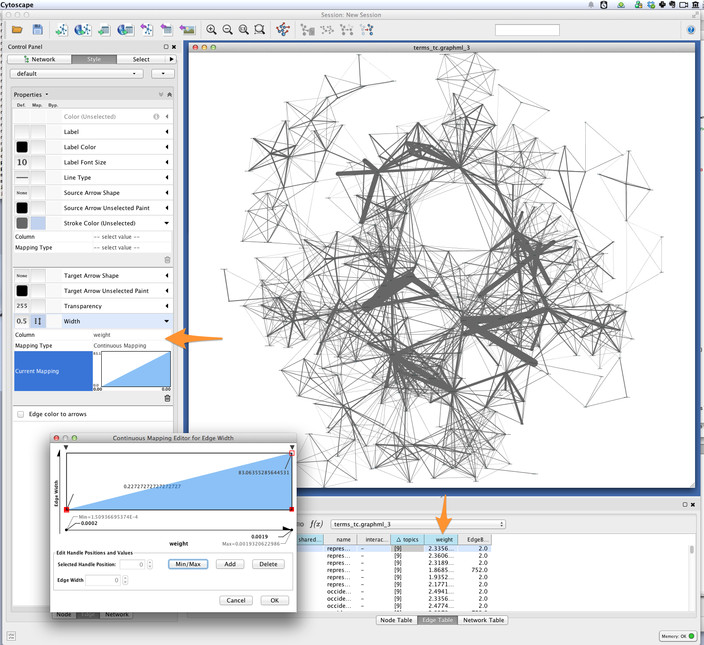
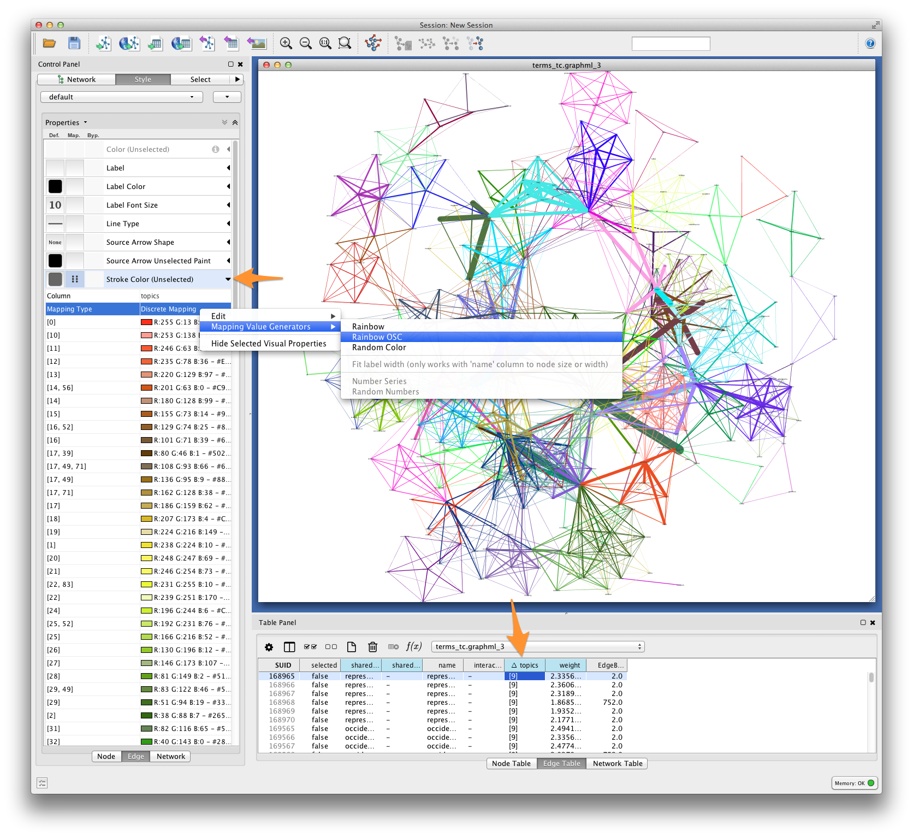
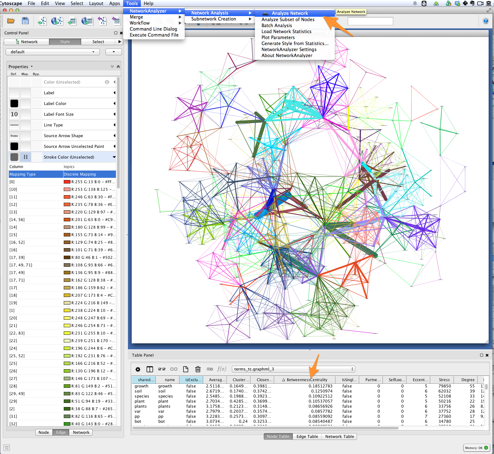
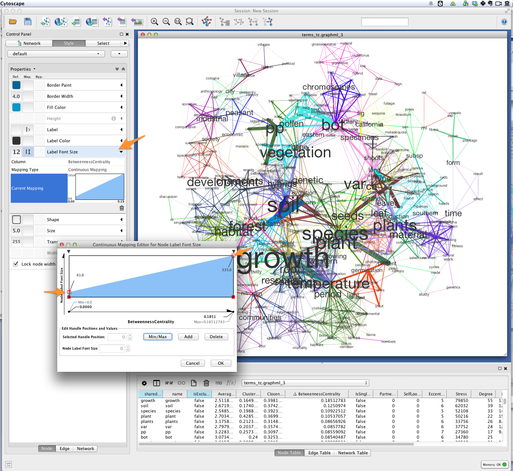

Generating and Visualizing Topic Models with Tethne and MALLET¶
Note
This tutorial was developed for the course Introduction to Digital & Computational Methods in the Humanities (HPS), created and taught by Julia Damerow and Erick Peirson.
Tethne provides a variety of methods for working with text corpora and the output of modeling tools like MALLET. This tutorial focuses on parsing, modeling, and visualizing a Latent Dirichlet Allocation topic model, using data from the JSTOR Data-for-Research portal.
In this tutorial, we will use Tethne to prepare a JSTOR DfR corpus for topic modeling in MALLET, and then use the results to generate a semantic network like the one shown below.

In this visualization, words are connected if they are associated with the same topic; the heavier the edge, the more strongly those words are associated with that topic. Each topic is represented by a different color. The size of each word indicates the structural importance (betweenness centrality) of that word in the semantic network.
This tutorial assumes that you already have a basic familiarity with Cytoscape.
Before You Start¶
You’ll need some data. See JSTOR Data-for-Research for instructions on retrieving data. Note that Tethne currently only supports XML output from JSTOR. Be sure to get some wordcounts so that you’ll have some data for modeling.
Be sure that you have the latest release of Tethne. See installation.
You should also download and install MALLET.
Loading JSTOR DfR¶
Use the readers.dfr module to load data from JSTOR DfR. Since we’re working with a single DfR dataset that contains wordcounts, we’ll use the readers.dfr.read_corpus() method.
Assuming that you unzipped your JSTOR DfR dataset to /Users/me/JStor DfR Datasets/2013.5.3.cHrmED8A, you can use something like the following to generate a Corpus from your dataset:
>>> from tethne.readers import dfr
>>> datapath = '/Users/me/JStor DfR Datasets/2013.5.3.cHrmED8A'
>>> MyCorpus = dfr.read_corpus(datapath, features=['uni'])
The parameter features=['uni'] tells the reader to look for unigrams in your dataset, and load them up as a featureset. Depending on the size of your dataset, this might take a few moments. The reader will attempt to discard junk data (e.g. unigrams with hashes ### in them), and index all of the Papers and features in the dataset.
Using a Stoplist¶
You may want to pare down our dataset further still, by applying a list of stop words. There are a few ways to do this in Tethne. One way is to use to the Corpus.apply_stoplist() method.
First, load the NLTK stoplist (or use your own):
>>> from nltk.corpus import stopwords
>>> stoplist = stopwords.words()
Then call Corpus.apply_stoplist():
>>> MyCorpus.apply_stoplist('unigrams', 'unigrams_stop', stoplist)
Checking your Data¶
If everything goes well, you should have a Corpus with some Papers in it...
>>> MyCorpus
<tethne.classes.corpus.Corpus object at 0x108403310>
>>> len(MyCorpus.papers)
241
...as well as a featureset called unigrams_stop:
>>> MyCorpus.features.keys()
['unigrams', 'unigrams_stop', 'citations']
>>> len(MyCorpus.features['unigrams_stop']['index']) # Unique features (words).
51639
Some of your papers may not have wordcounts associated with them. You can check how many papers have wordcount data:
>>> len(MyCorpus.features['unigrams_stop']['features'])
193
Filtering Wordcount Data¶
In the previous section, you loaded some DfR data with wordcounts (unigrams). That resulted in a Corpus with a featurset called unigrams_stop, containing 51,639 unique words. That’s a lot of words. Using a large vocabular increases the computational cost of building and visualizing your model. There may also be quite a few “junk” words left in your vocabulary. To pare down your vocabulary, use the Corpus.filter_features() method.
First, you’ll need to define a filter. A filter is a Python method that will be applied to each feature (word) in the featureset. It should accept three parameters:
| s | Representation of the feature (e.g. a string). |
| C | The overall frequency of the feature in the Corpus. |
| DC | The number of documents in which the feature occurs. |
If your method returns True, then the word will be retained. If it returns False, the word will be filtered out.
The filter method below will remove any words that are shorter than four characters in length, occur less than four times overall, and are found in less than two documents.
>>> def filt(s, C, DC):
... if C > 3 and DC > 1 and len(s) > 3:
... return True
... return False
Once your filter method is defined, call Corpus.filter_features(). The first parameter should be the name of the featureset to which the filter will be applied, e.g. unigrams_stop. The second parameter should be the name of the new featureset, which will be created from the features retained from the old featuret. The third parameter should be your filter method.
>>> MyCorpus.filter_features('unigrams_stop', 'unigrams_filtered', filt)
Your new featureset, unigrams_filtered, should be much smaller than the old featureset.
>>> len(MyCorpus.features['unigrams_filtered']['index'])
12675
In this example, only 12,675 unique words were retained. This is far more computationally tractable.
Topic Modeling in MALLET¶
Tethne provides a ModelManager called MALLETModelManager to perform topic modeling in MALLET.
For details about LDA modeling in MALLET, consult the MALLET website as well as this tutorial.
Using a ModelManager¶
First, you’ll need to import and instantiate the MALLETModelManager. To do that, you’ll need to know the path to your installation of MALLET. In the example below, MALLET is installed in ‘/Applications/mallet-2.0.7’. Tethne will look in that directory for a subdirectory, bin, that contains the executable called mallet. If you run into trouble at this step, double-check that the path that you provided does indeed contain that subdirectory and executable file.
You’ll also need to specify an output path. In the example below, output will be written to your Desktop.
>>> from tethne.model.managers import MALLETModelManager
>>> malletpath = '/Applications/mallet-2.0.7'
>>> outpath = '/Users/me/Desktop' # Be sure to change this.
>>> feature = 'unigrams_filtered'
>>> MyManager = MALLETModelManager(MyCorpus, feature, outpath, mallet_path=malletpath)
Running the Model¶
The MALLETModelManager will handle all of the dirty-work of building a corpus file that MALLET can read, loading that corpus into MALLET, running the model, and reading MALLET’s output. You can trigger all of this using the MALLETModelManager.build() method.
>>> MyLDAModel = MyManager.build(Z=50, max_iter=300, prep=True)
Z=50 tells the ModelManager to estimate parameters for 50 topics. max_iter=300 tells MALLET to stop after 300 iterations. This value is a bit low for large corpora, but is sufficient for the small example corpus used here.
Depending on the size of your corpus, the size of your vocabulary, and the number of topics, this may take some time to complete (minutes to hours).
When modeling is complete, you should see a new file called ll.png in your outpath.
{kind=link}
This figure shows the log-likelihood of your data given the LDA model over each iteration. If your model is getting “better” at describing your data, then this should increase over time. Eventually this value will level off, as subsequent iterations make negligible improvements to the model. If you don’t see that kind of asymptotical leveling, then you may need to increase the number of iterations (set max_iterations higher).
Inspecting the Model¶
The MALLETModelManager.build() method returns a LDAModel object. You can inspect the model using the LDAModel.print_topics() method, which prints the most likely words from each topic. You can control the number of words returned for each topic using the Nwords parameter.
>>> print MyLDAModel.print_topics(Nwords=5)
0: populations, genetic, variation, gene, variability
1: journal, article, illustrations, papers, form
2: leaf, water, size, leaves, temperature
3: found, great, form, number, forms
4: range, types, plant, type, ecological
5: research, university, volume, department, applications
6: populations, grass, soil, plots, plant
7: populations, population, conditions, environmental, high
8: seed, seeds, plants, germination, seedlings
9: spruce, white, british, growth, elevation
10: forms, harrison, zealand, work, hybrid
11: forest, plant, tropical, vegetation, ecology
12: subsp, tetraploid, rotundifolia, diploid, chromosome
.
.
.
49: taxonomy, plant, taxonomic, evolution, systematics
To print the top Nwords for a particular topic, use LDAModel.print_topic().
>>> MyLDAModel.print_topic(33, Nwords=7)
'selection, gene, isolation, disruptive, flow, populations, mating'
Topics over Time¶
If your dataset contains data from a broad range of time, you may wish to visualize the representation of particular topics over time. First, slice your Corpus. The code below will slice your Corpus using a 4-year sliding time-window. For more information about slicing, see Slicing a Corpus.
>>> MyCorpus.slice('date', 'time_window', window_size=4)
Use the MALLETModelManager.topic_over_time() method to generate the visualization.
>>> MyManager.topic_over_time(1, plot=True)
This should generate a PNG image, topic_[#]_over_time.png, in your outpath.
{kind=link}
Semantic Network¶
In LDA, topics are clusters of terms that co-occur in documents. We can interpret an LDA topic model as a network of terms linked by their participation in particular topics. In Tethne, we call this a topic-coupling network.
Build the Network¶
We can generate the topic-coupling network the topic_coupling() method from the networks.features() module.
>>> from tethne.networks import features
>>> MyGrap = features.topic_coupling(MyLDAModel, threshold=0.015)
The threshold argument tells Tethne the minimum P(W|T) to consider a topic (T) to contain a given word (W). In this example, the threshold was chosen post-hoc by adjusting its value and eye-balling the resultant network for coherence.
We can then write this graph to a GraphML file for visualization:
>>> import tethne.writers as wr
>>> wr.graph.to_graphml(MyGraph, './mymodel_tc.graphml')
Visualization¶
In Cytoscape, import your GraphML network by selecting File > Import > Network > From file... and choosing the file mymodel_tc.graphml from the previous step.
Edge weight¶
Tethne included joint average P(W|T) for each pair of terms in the graph as the edge attribute weight. You can use this value to improve the layout of your network. Try selecting Layout > Edge-weighted Spring Embedded > weight.
You can also use a continuous mapper to represent edge weights visually. Create a new visual mapping (in the VizMapper tab in Cytoscape < 3.1, Style in >= 3.1) for edge width.
{kind=link}
Edge color¶
For each pair of terms, Tethne records shared topics in the edge attribute topics. Coloring edges by shared topic will give a visual impression of the “parts” of your semantic network. Create a discrete mapping for edge stroke color, and then right-click on the mapping to choose a color palette from the Mapping Value Generators.
{kind=link}
Font-size¶
Finally, you’ll want to see the words represented by each of the nodes in your network. You might be interested in which terms are most responsible for bridging the various topics in your model. This “bridging” role is best captured using betweenness centrality, which is a measure of the structural importance of a given node. Nodes that connect otherwise poorly-connected regions of the network (e.g. clusters of words in a semantic network) have high betweenness-centrality.
Use Cytoscape’s NetworkAnalyzer to generate centrality values for each node: select Tools > NetworkAnalyzer > Network Analysis > Analyze Network. Once analysis is complete, Cytoscape should automatically add a BetweennessCentrality node attribute to the graph.
{kind=link}
Next, create a continuous mapping for Label Font Size based on BetweennessCentrality. More central words should appear larger. In the figure below, label font size ranges from around 40 to just over 300 pt.
{kind=link}
Export¶
Export the finished visualization by selecting File > Export > Network View as Graphics....
Wrapping up, Looking forward¶
To generate a network of papers connected by topics-in-common, try the networks.papers.topic_coupling() method.
Since Tethne is still under active development, methods for working with topic modeling and other corpus-analysis techniques are being added all the time, and existing functions will likely change as we find ways to streamline workflows. This tutorial will be updated and extended as development proceeds.